617 — Hội chứng rò khí ở nhũ nhi: tràn khí màng phổi & tràn khí trung thất / Neonatal air-leak syndrome
Tags: pattern:ro-khi pattern:tran-khi-mang-phoi pattern:tran-khi-trung-that vung:phoi vung:mang-phoi score:AP-ratio protocol:X-quang-nguc-nhi protocol:sieu-am-phoi
Mức chắc chắn (certainty): ca nguyên văn (verbatim case) — neo vào một ca trẻ đủ tháng nguyên văn (Al Dhouyani & Al-Naimi, Cureus 2024, PMC11301117: tràn khí màng phổi trái ngày 1 → tràn khí trung thất ngày 6, tự khỏi không can thiệp), bổ sung bằng tổng hợp y văn mở (cơ chế Macklin, dấu cánh buồm, ngưỡng AP-ratio).
1. Tổng quan bệnh học – cơ chế hình ảnh
- Hội chứng rò khí (air-leak syndrome, ALS) là một phổ tổn thương do khí thoát khỏi lòng phế nang ra khoảng kẽ rồi lan theo các đường mạc: khí kẽ phổi (pulmonary interstitial emphysema, PIE), tràn khí màng phổi (pneumothorax, PTX), tràn khí trung thất (pneumomediastinum, PM), tràn khí màng ngoài tim (pneumopericardium), khí dưới da (subcutaneous emphysema) và biến thể cần nhớ — tràn khí phúc mạc do chấn thương áp lực (barotrauma-related pneumoperitoneum).
- Cơ chế (TẠI SAO rò khí): phế nang nhũ nhi chưa trưởng thành (ít đàn hồi, thành mỏng) + thiếu surfactant/chủng loại bệnh nền (RDS, viêm phổi, hít phân su) gặp áp lực xuyên phổi cao đột ngột (resuscitation, thở máy, CPAP) → phế nang căng vỡ → khí vào khoảng kẽ quanh mạch–quanh phế quản (Macklin effect). Khí đi theo mạc quanh mạch (perivascular fascia — nguồn gốc màng ngoài tim xơ) và mạc trước khí quản (pretracheal fascia) về rốn phổi → trung thất, hoặc vỡ màng phổi tạng → khoang màng phổi. Cùng một đợt vỡ phế nang có thể cho nhiều đích khác nhau → trên hình ảnh, tên gọi do KHÔNG GIAN mà khí chiếm, không do bản chất khí.
- Vì sao đọc được trên hình: khí cản tia X cực thấp (X-quang: đen; CT: khoảng −1000 HU, thấp hơn nhu mô phổi lành −700 đến −900 HU) → chìa khóa là tương quan của dải khí với mạc/mốc giải phẫu: khí nâng tuyến ức lên khỏi màng ngoài tim = dấu cánh buồm rộng (Spinnaker-sail sign) — do có một mạc liên tục (màng Quattromani) bọc mặt trước tuyến ức và màng ngoài tim mà khí bị giữ lại; khí tách lá màng phổi khỏi cơ hoành = dấu khí ngoài màng phổi (extrapleural air sign).
- Cơ chế tự tiêu – “rửa nitơ” (nitrogen washout): khí khí quyển ~78% N₂; tổng áp lực khí trong phế nang ~760 mmHg, tổng áp lực khí trong máu tĩnh mạch ~706 mmHg → gradient đẩy khí khu trú hấp thu dần vào máu. Thở FiO₂ 90–100% làm loãng N₂ phế nang → tăng gradient, tan khí nhanh hơn — nhưng bằng chứng ở nhũ nhi còn yếu và có hại tiềm tàng (mất cân xứng V/Q, xẹp hấp thu), nên chỉ dùng chọn lọc ở trẻ có triệu chứng.
- Dịch tễ & yếu tố nguy cơ (ngưỡng định lượng):
- PTX nhập NICU: 0,5–2%; theo dõi 58.706 trẻ (Farghaly et al., J Perinatol 2026, PMC13121010): 310/58.706 = 0,53%, tăng vọt theo tuổi thai — 0,39% (≥ 35 tuần) · 4,0% (29–34 tuần) · 4,6% (≤ 28 tuần).
- Trẻ đủ tháng PTX tự phát: 1–2%, trẻ non tháng ~6% (Al Dhouyani, PMC11301117).
- Thời điểm: ở nhóm ≥ 35 tuần 76% trong 24 giờ đầu sau sinh.
- Yếu tố nguy cơ độc lập: CPAP ở phòng sinh (aOR 2,38) ở ≥ 35 tuần; nhỏ so với tuổi thai (SGA, aOR 3,81) ở 29–34 tuần; đặt nội khí quản tại phòng sinh (aOR 4,78) ở ≤ 28 tuần; viêm màng ối (OR 2,07), corticoid thai sớm (OR 5,22); ở trẻ thở máy, nhóm rò khí chịu PIP cao hơn: 20,6 ± 5 so với 14,3 ± 3 cmH₂O (p = 0,005).
2. Mẫu hình + chẩn đoán phân biệt theo vị trí (gamut)
- Khoang màng phổi (pleural) — PTX: dải đen giữa bờ phổi tạng (lung edge) và thành ngực, không có mạch máu băng qua; trẻ nằm ngửa → khí tụ đáy trước, dấu rãnh sâu (deep sulcus sign) — góc sườn–hoành đen sắc nhọn, sâu hơn bên đối diện. Tràn khí áp lực (tension) → đẩy lệch trung thất/rốn phổi sang bên lành + tim xa bên tổn thương.
- Trung thất (mediastinal) — PM: khí nâng tuyến ức (spinnaker-sail), dải khí dọc trung thất/khí quản, dấu cơ hoành liên tục (continuous diaphragm sign), dấu V Naclerio, dấu vòng quanh động mạch (ring around the artery) trên phim nghiêng, khí lan lên cổ/dưới da. KHÔNG có bờ phổi tạng, phổi vẫn áp sát thành ngực.
- Khoảng kẽ phổi (PIE): các bóng khí nhỏ li ti/tuyến tính dọc quanh mạch–phế quản, thùy căng giãn, không di chuyển; thường là tiền đề của PTX/PM.
- Màng ngoài tim (pneumopericardium): vòng khí ôm sát tim, không lan lên cổ, có thể gây chèn ép tim (tamponade).
- Ngoài màng phổi (extrapleural air sign): dải sáng trên cơ hoành trái, tách lá màng phổi khỏi cơ hoành — dấu của PM, không phải PTX.
- Phúc mạc (pneumoperitoneum do barotrauma): khí tự do dưới cơ hoành nhưng nguồn PHỔI (Macklin → trung thất → cơ hoành/khoang sau phúc mạc → phúc mạc), KHÔNG do thủng tạng rỗng — bẫy dễ dẫn tới mổ bụng oan.
- Mnemonic sàng lọc: nhũ nhi không chấn thương khởi phát cấp sau sinh/thở máy → luôn tự hỏi “khí nằm ở khoang nào?” thay vì chỉ “có tràn khí hay không”.
3. Bảng so sánh phân biệt (ma trận đối chiếu)
| Thực thể (entity) | Hình ảnh điển hình | Chốt vào (rule-in) | Chốt loại (rule-out) | Gợi ý xác nhận |
|---|---|---|---|---|
| Tràn khí màng phổi (PTX) | Dải đen giữa bờ phổi tạng và thành ngực, không mạch máu vượt qua; dấu rãnh sâu khi nằm ngửa | Bờ phổi tạng (lung edge) + không mạch máu băng qua | Có khí nâng tuyến ức + dấu cơ hoành liên tục → PM; khối không đổi khi đổi tư thế → không phải nếp da | Siêu âm phổi (dấu điểm phổi), X-quang thẳng/nghiêng, chụp ngửa–sấp |
| Tràn khí trung thất (PM) | Dấu cánh buồm: khí nâng tuyến ức khỏi màng ngoài tim; dải khí dọc trung thất, dấu cơ hoành liên tục, dấu V Naclerio, khí lên cổ | Nâng tuyến ức + dấu cơ hoành liên tục + lan lên cổ | Có bờ phổi tạng tách khỏi thành ngực → PTX | X-quang thẳng + nghiêng; CT khi PM lượng nhiều/kéo dài/không điển hình |
| Khí kẽ phổi (PIE) | Bóng khí li ti/tuyến tính dọc quanh mạch–phế quản, thùy căng giãn, cố định | Bóng khí kẽ cố định dọc mạch phổi | Dải khí di chuyển tự do theo tư thế → PTX | X-quang lặp lại (PIE báo trước PTX/PM) |
| Tràn khí màng ngoài tim | Vòng khí sát tim, có thể gây chèn ép tim | Vòng khí ôm tim, không lan lên cổ | Dải khí giữa tim và cơ hoành + lên cổ → PM | Siêu âm tim (tamponade), X-quang thẳng–nghiêng |
| Khí ngoài màng phổi (extrapleural air) | Dải sáng trên cơ hoành trái, tách màng phổi khỏi cơ hoành | Dải khí nằm giữa cơ hoành và màng phổi | Có bờ phổi tạng tách khỏi thành ngực → PTX | X-quang thẳng; CT nếu cần |
| Tràn khí phúc mạc do barotrauma | Khí tự do dưới cơ hoành ở trẻ thở máy áp lực cao, bụng mềm | Khí phúc mạc + tiền sử thở máy/khí trung thất kèm theo | Thành ruột mỏng + khí trong thành/mạch cửa + bụng gồng → thủng tạng (hoại tử ruột) | Theo dõi lâm sàng ± ống thông mạch máu; tránh mổ bụng vội |
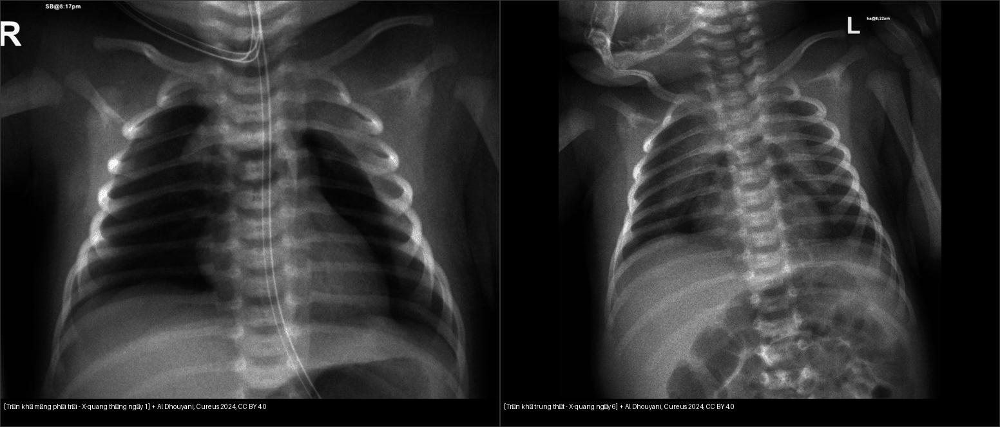
Trái: PTX trái — bờ phổi tạng tách khỏi thành ngực, nhu mô xẹp về rốn. Phải: sau 6 ngày, khí nâng tuyến ức (tràn khí trung thất) — phổi đã nở lại, không còn bờ phổi tạng. Cùng một đợt rò khí lan theo hai con đường khác nhau. Nguồn: Al Dhouyani & Al-Naimi, Cureus 2024, CC BY 4.0. Ảnh ghép letterbox.4. Protocol chụp + hệ phân độ/điểm chuẩn hóa
- Siêu âm phổi tại giường (POCUS) — đầu tay ở NICU: dấu A-line sắc nét, MẤT B-line, mất trượt màng phổi (lung sliding); dấu “điểm phổi” (lung point) tại ranh giới vùng rò khí/vùng phổi lành là dấu đặc hiệu nhất cho PTX; M-mode dạng “mã vạch” (barcode sign) thay vì “bờ biển” (seashore). Với PM, trên mặt cắt ngang trước xương ức thấy A-line + không quan sát được mặt cắt tim bình thường do khí che; điểm phổi cũng xuất hiện ở vùng chuyển tiếp.
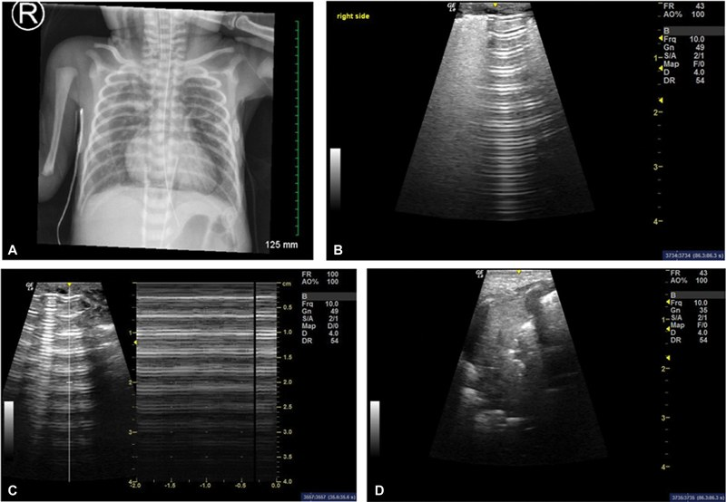
*(A) X-quang: tràn khí trung thất hai bên lan lên cổ; (B) siêu âm cạnh ức phải: A-line sắc nét, mất B-line, mất trượt màng phổi; (C) M-mode: dấu “mã vạch” (barcode sign); (D) điểm phổi (lung point) tại ranh giới vùng rò khí/vùng lành — dấu đặc hiệu nhất. Nguồn: Sagaser AE et al., AJP Rep 2024 (PMC11461096), CC BY-NC-ND 4.0 — giữ nguyên bản, không cắt/ghép.*- X-quang ngực thẳng (AP, trẻ nằm ngửa) là chuẩn đầu tiên: tìm dấu rãnh sâu, bờ phổi tạng, dấu cánh buồm, dấu cơ hoành liên tục, khí cổ/dưới da. Phim nghiêng tay (lateral decubitus) lật bên nghi ngờ lên trên để khí dồn thành lớp — hữu ích khi PTX khó thấy.
- CT ngực chỉ khi: diễn tiến không điển hình, rõ kích thước/thành phần của PM/PIE, rò khí dai dẳng, hoặc nghi tổn thương phổi–phế quản kèm theo (không dùng thường quy vì liều bức xạ — nguyên tắc ALARA).
- Đo kích thước PTX để tiên lượng can thiệp (AP-ratio, APr): đo đường kính ngang rộng nhất của dải khí chia cho đường kính ngang rộng nhất của nửa lồng ngực trên cơ hoành (Baillie et al., Children 2025, PMC12839672, n = 62):
- APr < 0,102 → 0% (39% số ca) cần can thiệp (không thủ thuật).
- APr > 0,187 → 100% (15% số ca) cần can thiệp.
- Vùng giữa APr 0,104–0,183 → ~47% cần can thiệp (vùng xám).
- Ngưỡng tốt nhất APr = 0,184: AUC 0,902 (KTC 0,828–0,977), độ nhạy 86%, độ đặc hiệu 88%, chỉ số Youden J = 0,74, phân loại đúng 87%.
- Chọc hút kim (thoracentesis) đơn thuần thường thất bại: 13/14 (93%) ca chọc hút phải đặt ống dẫn lưu sau đó; RCT cho thấy 55% phải dẫn lưu trong 6 giờ; tổng quan Cochrane (142 trẻ) ~30% chọc hút không cần dẫn lưu tiếp.
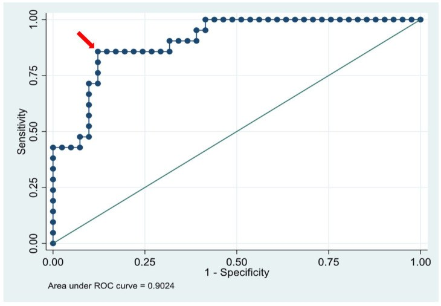
*Đường cong ROC của AP-ratio: AUC 0,902 (KTC 0,828–0,977); ngưỡng APr = 0,184 cho Se 86%/Sp 88%. Nguồn: Baillie KN et al., Children 2025 (PMC12839672), CC BY 4.0.*- Flowchart xử trí rò khí ở nhũ nhi:
flowchart TD
A[Nhũ nhi nghi rò khí: cấp tính sau sinh/thở máy] --> B[Siêu âm phổi tại giường + X-quang ngực thẳng]
B --> C{Khí ở khoang nào?}
C -->|Có bờ phổi tạng + mất trượt màng phổi| D[Tràn khí màng phổi]
C -->|Nâng tuyến ức + cơ hoành liên tục| E[Tràn khí trung thất]
C -->|Bóng khí kẽ cố định quanh mạch| F[Khí kẽ phổi - PIE]
C -->|Khí dưới cơ hoành, bụng mềm, đang thở máy| G[Nghĩ barotrauma - KHÔNG mổ bụng vội]
D --> H{Dấu hiệu tràn khí ÁP LỰC: lệch trung thất + suy hô hấp/tuần hoàn?}
H -->|Có| I[Chọc giải áp NGAY: liên sườn 2-3 cạnh xương ức] --> J[Đặt ống dẫn lưu màng phổi]
H -->|Không| K{APr > 0,19?}
K -->|Có| J
K -->|Không| L[Theo dõi + oxy chọn lọc, X-quang lặp lại]
E --> M[Oxy chọn lọc + theo dõi; can thiệp chỉ khi tràn khí trung thất ÁP LỰC]
F --> L
G --> N[Điều chỉnh máy thở giảm PIP + dẫn lưu tại giường nếu cần]
J --> O{Rò khí dai dẳng dù ống đúng vị trí?}
O -->|Có| P[Nghĩ rò phế quản-màng phổi: nội soi/NKQ chọn lọc, bịt, ± ECMO/mổ]
O -->|Không| L
5. Biến thể bình thường và cạm bẫy
- Bẫy tử vong: tràn khí phúc mạc do barotrauma. Khí tự do dưới cơ hoành ở trẻ thở máy áp lực cao có thể do Macklin effect lan từ trung thất xuống qua cơ hoành/khoang sau phúc mạc, không phải thủng ruột. Nếu bụng mềm, không gồng, không có khí trong thành ruột/tĩnh mạch cửa → tránh mổ bụng oan; dẫn lưu tại giường + giảm áp lực đường thở. (Hiremath et al., Cureus 2025, PMC11955197 — sau đặt dẫn lưu phúc mạc còn xuất hiện PTX phải mới, minh chứng khí đang “đi lại” giữa các khoang.)
- Nếp da/mép màng phổi giả (skin fold) dễ nhầm PTX: kiểm tra bờ tận cùng ngoài thành ngực + có cắt qua xương sườn, và đổi tư thế/không đổi theo nhịp thở; bờ phổi thật đi song song với thành ngực.
- Tuyến ức bình thường vs PM: tuyến ức bình thường là mờ mềm “cánh buồm” sát trung thất, không có dải khí sáng nâng nó lên; PM tạo đường sáng rõ giữa tuyến ức và màng ngoài tim.
- Trẻ nằm ngửa che PTX: khí dồn ra trước và đáy, phim thẳng có thể “bình thường” → tìm dấu rãnh sâu; nếu còn nghi, chụp nghiêng tay hoặc siêu âm.
- Sỏi bỏ sót (satisfaction of search): thấy PTX rồi dừng đọc → bỏ sót PM kèm theo và ống thông/ống sonde sai vị trí (nhắc đi nhắc lại trong các ca).
- PIE thoáng qua: bóng khí kẽ có thể tự tiêu nhưng báo trước PTX/PM nặng hơn → theo dõi.
- Rò khí dai dẳng dù ống dẫn lưu đúng vị trí → nghĩ rò phế quản–màng phổi (bronchopleural fistula, BPF) hoặc tổn thương phế quản lớn (Janowicz & Szostawicki, Front Pediatr 2026, PMC13534012). Ở trẻ non tháng, BPF bẩm sinh cực hiếm nhưng biểu hiện ban đầu giống PTX của non tháng/thở máy → phải phân biệt với dị dạng đường thở phổi bẩm sinh (CPAM), phổi cách ly, teo phế quản bẩm sinh, nang phế quản.
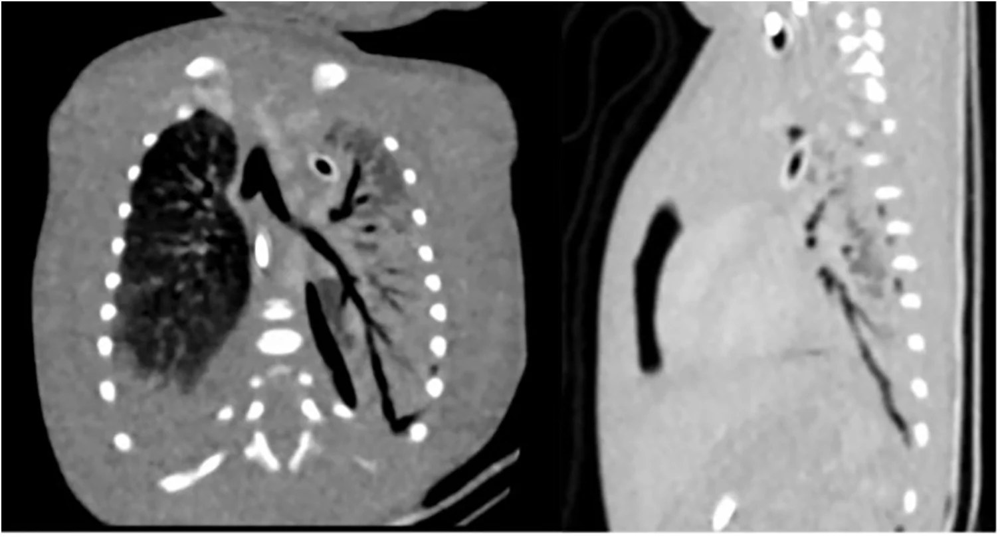
CT ngực trước can thiệp ở trẻ non tháng rò khí dai dẳng: đường thông phế quản–màng phổi (mũi tên trong bài gốc) — minh chứng khi khí vẫn thoát dù ống dẫn lưu đúng vị trí. Nguồn: Janowicz T & Szostawicki M, Front Pediatr 2026 (PMC13534012), CC BY 4.0.6. Tự lượng giá — Blind Quiz ngay trên trang tĩnh
Ảnh trơn ở NGOÀI, dấu hiệu + chẩn đoán giấu trong khối “bấm để hiện đáp án”. Mở trên Pages: tự đoán rồi bấm mở đáp án.
Ca 1 — Trẻ đủ tháng 2.730 g, sinh thường, sau 10 phút khởi phát tím + rên rỉ, giảm thông khí hai bên. Phim ngày 1.
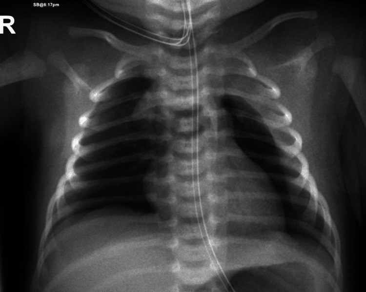
- Gợi ý lâm sàng: đủ tháng, Apgar 8/9, khởi phát cấp trong 10 phút đầu.
- Câu hỏi: Mô tả dấu hiệu chính? Vì sao không nên gọi đây là “viêm phổi sơ sinh”? Dấu hiệu nào quyết định can thiệp?
Bấm để hiện đáp án (findings + chẩn đoán)
- Dấu hiệu: nửa lồng ngực trái sáng, nhu mô phổi trái xẹp về rốn (bờ phổi tạng) + tràn dịch màng phổi lượng vừa — tràn khí màng phổi trái kèm tràn dịch.
- Chẩn đoán: tràn khí màng phổi trái ở trẻ đủ tháng — vỡ phế nang chưa trưởng thành do áp lực rặn sinh. Xử trí: CPAP 5 cmH₂O/PEEP, FiO₂ 30% trong 9 giờ rồi cai xuống oxy lưu lượng thấp — không cần chọc hút/dẫn lưu, tự khỏi.
- Nguồn ảnh: Al Dhouyani & Al-Naimi, Cureus 2024 (PMC11301117), CC BY 4.0.
Ca 2 — Cùng trẻ trên, phim lại ngày 6 sau khi cai oxy.
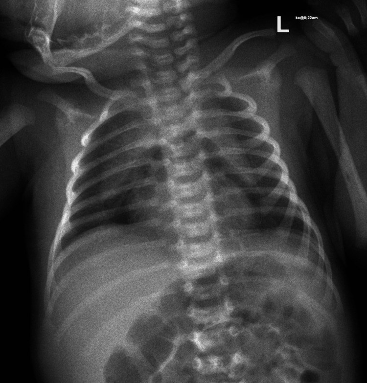
- Câu hỏi: Tổn thương mới là gì? Vì sao chuyển từ tràn khí màng phổi sang tràn khí trung thất?
Bấm để hiện đáp án (findings + chẩn đoán)
- Dấu hiệu: dải khí nâng tuyến ức lên khỏi bóng tim (khí dưới tuyến ức), dọc trung thất — tràn khí trung thất.
- Chẩn đoán: tràn khí trung thất — cùng đợt rò khí, khí lan theo mạc quanh mạch–trước khí quản (Macklin) từ rốn phổi vào trung thất. CT ngày 9 xác nhận tràn khí trung thất trước dưới tuyến ức; trẻ ổn định, không cần can thiệp, xuất viện ngày 9.
- Nguồn ảnh: Al Dhouyani & Al-Naimi, Cureus 2024 (PMC11301117), CC BY 4.0.
Ca 3 — Dấu hiệu “cánh buồm” kinh điển.
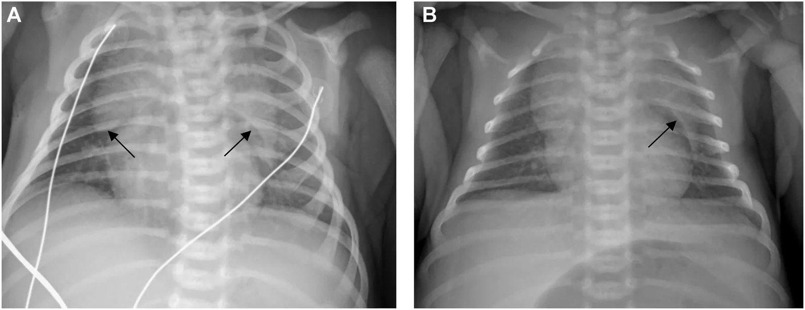
- Gợi ý: trẻ sơ sinh khó thở nhẹ sau sinh, không thở máy.
- Câu hỏi: Gọi tên dấu hiệu (2 mũi tên)? Bảng so sánh với PTX gồm dấu hiệu nào?
Bấm để hiện đáp án (findings + chẩn đoán)
- Dấu hiệu: khí nâng hai thùy tuyến ức (mũi tên) tạo hình “cánh buồm rộng” (spinnaker-sail / angel wing sign) — tràn khí trung thất. Panel B: phim theo dõi ngày 5, còn dư khí nhẹ.
- Chốt: không có bờ phổi tạng → không phải PTX; phổi vẫn áp sát thành ngực.
- Nguồn ảnh: Miguel CF et al., Radiol Case Rep 2026 (PMC13562374), CC BY 4.0.
Ca 4 — CT xác nhận và phân bố khí theo mạc.
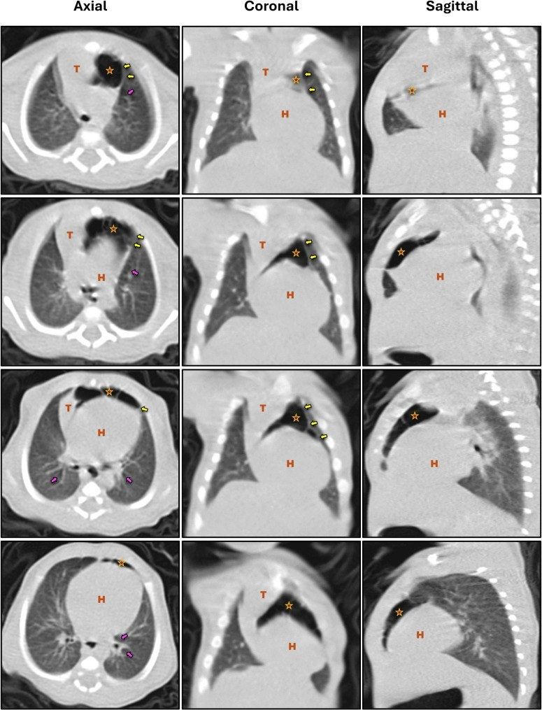
- Câu hỏi: Trên ba mặt phẳng trục/vành/dọc, khí tập trung ở đâu (T = tuyến ức, H = tim)? Mũi tên vàng và mũi tên hồng chỉ gì?
Bấm để hiện đáp án (findings + chẩn đoán)
- Dấu hiệu: khí bao quanh và nâng tuyến ức (T) khỏi tim (H); mũi tên vàng = bờ mạc bên phủ tuyến ức và màng ngoài tim (khí bị giữ giữa hai lớp); mũi tên hồng = khí quanh phế quản chính (air dissecting along the peribronchial sheaths) — tức đường lan Macklin đang diễn ra.
- Chẩn đoán: tràn khí trung thất tự phát ở trẻ đủ tháng — thường lành tính, tự tiêu.
- Nguồn ảnh: Zamlout A et al., BMC Pediatr 2025 (PMC11995531), CC BY 4.0.
Ca 5 — Bẫy mổ bụng oan: khí tự do dưới cơ hoành ở trẻ đang thở máy.
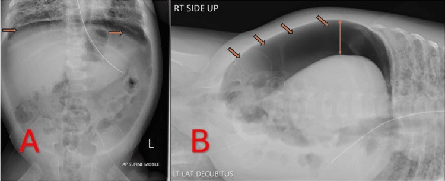
- Gợi ý: trẻ hiệu chỉnh ~36 tuần, thở máy PIP tới 30 cmH₂O, bụng mềm không gồng.
- Câu hỏi: Đây là thủng tạng rỗng hay tràn khí phúc mạc do barotrauma? Bằng chứng lâm sàng nào giúp tránh mổ?
Bấm để hiện đáp án (findings + chẩn đoán)
- Dấu hiệu: liềm khí tự do dưới cơ hoành (A: phim thẳng ngửa; B: nghiêng trái, khí dồn lớp trên cùng ổ bụng) — hình ảnh “bụng ngoại khoa”.
- Chẩn đoán: tràn khí phúc mạc do barotrauma (Macklin effect) — khí từ phế nang → trung thất → cơ hoành/khoang sau phúc mạc → phúc mạc, không do thủng ruột. Trẻ huyết động ổn, bụng mềm, không gồng → xử trí bằng dẫn lưu phúc mạc tại giường + giảm áp lực đường thở, tránh mổ bụng. Sau dẫn lưu thấy PTX phải mới (khí “đi lại” giữa các khoang), phải đặt ống dẫn lưu màng phổi.
- Phản biện/cạm bẫy: tiêu chuẩn loại trừ thủng tạng = không khí trong thành ruột/tĩnh mạch cửa, thành ruột không mỏng, bụng không gồng; nếu có các dấu hiệu đó thì vẫn phải mổ.
- Nguồn ảnh: Hiremath A et al., Cureus 2025 (PMC11955197), CC BY 4.0.
Ca 6 — Ngưỡng đo kích thước PTX để quyết định can thiệp.
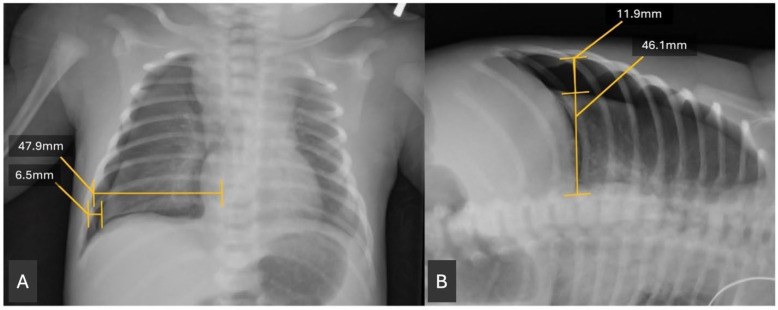
- Câu hỏi: Đo gì chia cho gì? Ngưỡng nào giúp “chốt” có/không cần dẫn lưu?
Bấm để hiện đáp án (findings + chẩn đoán)
- Cách đo: đường kính ngang rộng nhất của dải khí (6,5 mm/11,9 mm) chia cho đường kính ngang rộng nhất nửa lồng ngực trên cơ hoành (47,9 mm/46,1 mm) = APr; đo được trên phim thẳng (A) và nghiêng tay (B).
- Ngưỡng: APr < 0,102 → 0% cần can thiệp; APr > 0,187 → 100% cần can thiệp; ngưỡng tốt nhất 0,184 (AUC 0,902; Se 86%, Sp 88%).
- Nguồn ảnh: Baillie KN et al., Children 2025 (PMC12839672), CC BY 4.0.
Ca 7 — Diễn tiến tự tiêu của tràn khí trung thất (ngày 2 → ngày 11).
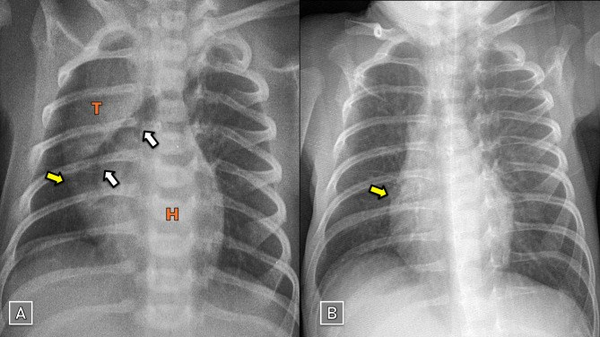
- Câu hỏi: Hai phim cách nhau 9 ngày ở cùng một trẻ tràn khí trung thất — dấu hiệu nào biến mất để khẳng định khỏi?
Bấm để hiện đáp án (findings + chẩn đoán)
- Dấu hiệu: (A) ngày 2 — dấu cánh buồm (mũi tên vàng: bờ mạc bên phủ tuyến ức và màng ngoài tim, giữ khí lại); (B) ngày 11 — gần như hết hoàn toàn, đường viền tuyến ức trở lại bình thường.
- Chẩn đoán: tràn khí trung thất tự phát lành tính; theo dõi bằng X-quang lặp lại là đủ, không cần can thiệp.
- Nguồn ảnh: Zamlout A et al., BMC Pediatr 2025 (PMC11995531), CC BY 4.0.
Bài liên quan chéo
- 600 – Tổng quan Nhi khoa
- 610 – Suy hô hấp sơ sinh & dị dạng phổi
- 613 – Viêm tiểu phế quản ở nhũ nhi (RSV) (biến chứng tràn khí 0,5–2%)
- 614 – Bệnh tiểu phế quản tắc nghẽn (BO) & Swyer–James (ứ khí một bên)
- 616 – Biến chứng viêm phổi nhi: empyema & hoại tử phổi (tràn khí màng phổi vs mủ màng phổi)
Ảnh
- Tên file:
617_slug_Modality_SourceID.jpg; nguồn + giấy phép từng ảnh trongimages/CREDITS.md. - Tất cả ảnh là CC BY 4.0 (trừ ảnh siêu âm phổi trong CREDITS là CC BY-NC-ND, giữ nguyên bản) — cho phép tải/ghép khi ghi nguồn; không có ảnh nào phải dẫn link vì paywall.
Không dùng để chẩn đoán độc lập khi chưa có người hướng dẫn.